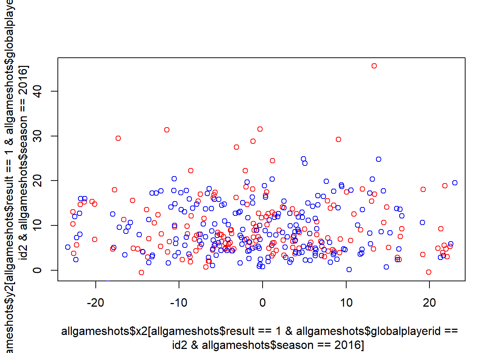

Chapter 6 Models
library(mvtnorm); library(dplyr); library(ggplot2)Warning: package 'dplyr' was built under R version 3.3.3
Attaching package: 'dplyr'The following objects are masked from 'package:stats':
filter, lagThe following objects are masked from 'package:base':
intersect, setdiff, setequal, unionWarning: package 'ggplot2' was built under R version 3.3.3#generating shot success probabilities
#theta <- matrix(c(-0.5, 1.5, -5.5)) #GLM parameters (intercept, angle, log distance)
datafolder <- "C:/Users/Nathaniel Brown/Desktop/DMBBall Data"
source("C:/Users/Nathaniel Brown/Documents/GitHub/thesis-sp18-brown-hothand/sportvu_fxns.R")Warning: package 'xml2' was built under R version 3.3.3id1 <- 887661
id2 <- 842296
plot(x=allgameshots$x2[allgameshots$result == 1 & allgameshots$globalplayerid==id2 & allgameshots$season==2016],
y=allgameshots$y2[allgameshots$result == 1 & allgameshots$globalplayerid==id2 & allgameshots$season==2016], col = "red")
points(x=allgameshots$x2[allgameshots$result == 0 & allgameshots$globalplayerid==id2 & allgameshots$season==2016],
y=allgameshots$y2[allgameshots$result == 0 & allgameshots$globalplayerid==id2 & allgameshots$season==2016], col = "blue")
6.0.0.1 GLM
6.0.0.2 Shot-by-Shot DGLM (only considering location, order, and result of each shot. not amount of time between shots).
#TO DO:
#send prof west the ft array (location and angle data, and intercept) and the binary y vector data.
#make a mixed effects GLM with random player effect
#use JAGS or rstan for logistic regression random effects MCMC
playerid <- id1
Z <- allgameshots %>% filter(globalplayerid == playerid) %>% mutate(logr = log(r) - mean(log(r))) %>% select(theta, logr) %>% cbind(1,.)
X <- allgameshots %>% filter(globalplayerid == playerid) %>% select(x=x2, y=y2)
y <- allgameshots %>% filter(globalplayerid == playerid) %>% mutate(logr = log(r) - mean(log(r))) %>% select(result) %>% '[['(1)
ym <- 94; xm <- 50
shots <- rep(TRUE,nrow(Z)) #no missing shots in this case
tshot <- which(shots)
nshots <- length(tshot)
T <- length(shots)
#generating shot outcomes
iy <- which(y[!is.nan(y)] == 1)
#initial parameters
mod <- (glm(y ~ theta + logr, data=Z, family="binomial")) #high p-values everywhere
theta <- coef(mod)
p <- length(theta)
pscore <- fitted(mod, type="response")
q <- rep(NaN, T)
q[shots] <- pscore
par(xpd=TRUE)
plot(0,0,type="n",xlim = c(0,T),ylim=c(0,1), ylab = "probability", xlab = "time index", main = "GLM")
points(tshot, q[tshot], pch=4, col = "blue")
points(tshot, y[tshot], pch=1, col = "red")
legend(x=T*.8, y=1.21, legend=c("probability", "outcome"), pch = c(4,1), col=c("blue", "red"))
par(xpd=FALSE)
plot(X[iy,c("x","y")], ylim=c(0,ym), xlim=c(-xm,xm), col = "red", pch = 3, xlab="x", ylab="y", main = "Makes and Misses")
points(X[-iy,c("x","y")], col ="blue", pch = 1)
abline(h=ym/2)
points(0,0,col="red", cex=2)
#Forward Filtering
#set up DGLM and initial prior
#first, set up covariates per time interval
F <- t(Z)
p <- dim(F)[1]
#theta = state vector (GLM parameters) (px1)
#F = the data...regression vectors for all t...aka the design matrix (pxT)
#G = known evolution matrix ???????
#omega = evolution errors with 0 mean and known variance matrix W
#g(.) = function to map eta to real line (logit)
mt <- theta
Ct <- diag(p)
#mt = prior mean vector
#Ct = prior covariance matrix
#(theta[t-1]|D[t-1]) ~ N(mt[t-1], Ct[t-1])
delta <- 1 #0.99 #discount factor; "streaky parameter"
#forward filtering (FF)
smt <- matrix(rep(0,p*T), nrow=p) #save post means
sCt <- array(rep(0,p*p*T), dim = c(p,p,T)) #save post covars
spt <- rep(NaN, T) #save post prob success
lmlik <- rep(0,T) #marg lik per time int
ishot <- 0
rtst <- array(NA, c(T,2))
for(t in 1:T){
if(t %in% tshot){
#current shot attempt index, and time
ishot <- ishot + 1
ti <- tshot[ishot]
ft <- (F[,ishot]) %*% mt
At <- Ct %*% F[,ishot]/delta
qt <- (F[,ishot]) %*% At
At <- At/as.numeric(qt)
#at = Gt*mt in txtbk, but = mt here.
#Rt = Gt*Ct[t-1]*Gt' + Wt in txtbk, but = Ct/delta here
#f = F'at = F'mt
#q = F'RF = F'Ct F (1/delta)
#((lambda,theta)' | Dt-1) ~ N( (f, a), ((q, F'C/delta),(CF/delta, C)) )
#what is mu tho?
#???????????????????????
#"the samp dist of Yt depends on thetat only via the single quantity mut
#prior: (mu|Dt) ~ N(f, q)
#Vt > 0 is scale parameter aka precision of distribution...
#but precision of what??? what is b(Yt, Vt?)
#Q = q + Vt
#post: (mu|Dt) ~ N(f*, q*)
#f* =
#what is mu???
#f = F'a which is
#prior mean and var of linear predictor, and adaptive vector
#compute approx prior Beta(r,s) params; update w/ numerical iterations for exact values
eft <- exp(ft) #crude initial values
rt <- (1+eft)/qt
st <- rt/eft
rt <- max(0.5, rt)
st <- max(0.5, st)
#fts = ft* = posterior mean of ????
#qts = qt* = posterior variance of something ???
#iterative numerical solution
# ep <- 0.5; drt <- 1; dst <- 1; xt <- matrix(c(rt, st))
# while(max(drt, dst) < ep){
# r0t <- psigamma(rt,0); s0t <- psigamma(st,0)
# r1t <- psigamma(rt,1); s1t <- psigamma(st,1)
# fxt <- c(r0t-s0t-ft, r1t+s1t-qt)
# Axt <- matrix(c(r1t, -s1t, psigamma(rt, 2), psigamma(st, 2)), ncol=2, byrow = TRUE)
# xt <- xt - solve(Axt, fxt)
# drt <- xt[1] - rt; dst <- xt[2] - st
# rt <- xt[1]; st <- xt[2]
# }
rtst[t,] <- c(rt, st)
if(rt > 1000){
break
}
lmlik[t] <- lgamma(rt+st) - lgamma(rt) - lgamma(st) +
lgamma(rt+y[t]) + lgamma(st+1-y[t]) - lgamma(rt+st+1) +
lgamma(2) - lgamma(1+y[t]) - lgamma(2-y[t])
rts <- rt + y[t]; sts <- st + 1-y[t] #posterior beta params
#convert to mean and variance for linear predictor
fts <- psigamma(rts,0)-psigamma(sts,0); qts <- psigamma(rts,1)+psigamma(sts,1)
spt[t] <- rts/(sts+rts)
#update state parameters
mt <- mt+At%*%(fts-ft)
Ct <- Ct/delta - (At%*%t(At))*as.numeric(qt-qts)
Ct <- (Ct + t(Ct))/2
c(t, rt, st, mt)
if(any(is.nan(mt))){
print("stop")
break
}
}
smt[,t] <- mt; sCt[,,t] <- Ct #saving
}
par(xpd=TRUE)
plot(smt[1,],type="l", col = "blue", xlab = "shot index", ylab = "online state mean", main = "Dynamic Parameters")
lines(smt[2,],type="l", col = "orange")
lines(smt[3,],type="l", col = "yellow")
legend(x=T*.75, y=4, legend = c("intercept", "angle", "log(distance)"), pch = c(16), col = c("blue", "orange", "yellow"))
plot(0,0,type="n",xlim = c(0,T),ylim=c(0,1), ylab = "probability", xlab = "time index", main = "DGLM")
points(tshot, spt[tshot], pch=4, col = "blue")
points(tshot, y[tshot], pch=1, col = "red")
legend(x=T*.8, y=1.21, legend=c("probability", "outcome"), pch = c(4,1), col=c("blue", "red"))
#arm::binnedplot(x=spt[tshot], y=y[tshot]-spt[tshot])
#Backward sampling
nmc <- 1000
#save posterior means and posterior success probs
MCtheta <- array(0, c(p, T, nmc))
MCq <- array(0, c(T, nmc))
#begin BS at timeunit T
thetat <- rmvnorm(n=nmc, smt[,T], sCt[,,T]) #SOMETIMES sCT[,,T] IS NOT POSITIVE DEFINITE. DEPENDS ON RANDOM SEED.
MCtheta[,T,] <- t(thetat)
MCq[T,] <- 1/(1+exp(-thetat %*% F[,nshots]))
#then recurse backwards
ishot <- nshots + 1
for(t in (T-1):1){
if(t %in% tshot){
ht = (1-delta)*t(array(smt[,t], c(dim(smt)[1], nmc))) + delta*thetat
#run a simulation for each row of ht and each 3rd dim of sCt
thetat <- t(apply(ht, 1, rmvnorm, n=1, sigma = sCt[,,t]*(1-delta)))
MCtheta[,t,] <- t(thetat)
ishot <- ishot - 1; ti <- tshot[ishot]
MCq[t,] <- 1/(1+exp(-thetat %*% F[,ishot]))
}
}
#retrospective posterior summaries
#posterior of shot probabilities?
pr <- t(apply(MCq[tshot,], 1, quantile, c(.025, .25, .5, .75, .975))) #get quantiles of each row
plot(0,0, type="n", xlim = c(0,T), ylim=c(0,1), main = "Posterior Probability", ylab="hit rate", xlab="time interval")
lines(x=tshot, y=pr[,1], col = "gray")
lines(x=tshot, y=pr[,5], col = "gray")
polygon(c(tshot, rev(tshot)), c(pr[,1], rev(pr[,5])),
col = "gray", border = NA)
lines(x=tshot, y=pr[,2], col = "black")
lines(x=tshot, y=pr[,4], col = "black")
polygon(c(tshot, rev(tshot)), c(pr[,2], rev(pr[,4])),
col = "black", border = NA)
lines(x=tshot, y=pr[,3], col = "red")
points(x=1:T, y=y, pch=1)
#posteriors of parameters from DGLM
posterior_labels <- c("Posterior Intercept", "Posterior Angle", "Posterior Log Distance")
for(j in 1:p){
pr = t(apply(MCtheta[j,tshot,], 1, quantile, c(.025, .25, .5, .75, .975)))
plot(0,0, type="n", xlim = c(0,T), ylim = range(pr), main = posterior_labels[j], xlab = "time interval", ylab = "state vector element")
lines(x=tshot, y=pr[,1], col = "gray")
lines(x=tshot, y=pr[,5], col = "gray")
polygon(c(tshot, rev(tshot)), c(pr[,1], rev(pr[,5])),
col = "gray", border = NA)
lines(x=tshot, y=pr[,2], col = "black")
lines(x=tshot, y=pr[,4], col = "black")
polygon(c(tshot, rev(tshot)), c(pr[,2], rev(pr[,4])),
col = "black", border = NA)
points(x=tshot, y=pr[,3], col = "red", pch = 4)
}6.0.0.3 Game-By-Game gibbs
library(R2jags)
simplemod <- function(){
for(i in 1:n){
y[i] ~ dbinom(p, 1)
}
p ~ dbeta(a0,B0)
}
simpledat <- list(y = c(rep(0,1), rep(1,3)),
a0 = 1/200, B0 = 1/200
#prior is extremely skewed to edges, data is extremly 75%
);simpledat$n <- length(simpledat$y)
simplesim <- jags(simpledat,
n.iter=1000, n.chains=1, n.burnin=100,
parameters.to.save = "p",
model.file=simplemod)
simplesim.mcmc <- (as.mcmc(simplesim)[[1]])
model <- function(){
# N observations
for(i in 1:N){
result[i] ~ dbern(prob[i])
logit(prob[i]) <- beta_int*int[i] + e_int[player[i]] + beta_r*logr[i] + e_r[player[i]] + beta_theta*theta[i] + e_theta[player[i]] # a random 'e' here or is that implied?
}
# priors on random player effects
for(j in 1:M){
e_int[j] ~ dnorm(beta_int,tau)
e_r[j] ~ dnorm(beta_r,tau)
e_theta[j] ~ dnorm(beta_theta,tau)
}
# Priors
beta_int ~ dnorm(0.0,1.0E-6)
beta_r ~ dnorm(0.0,1.0E-6)
beta_theta ~ dnorm(0.0,1.0E-6)
# Hyperpriors
tau ~ dgamma(0.1,0.1)
}
datlist <- list(
logr = log(allgameshots$r),
theta = allgameshots$theta,
result = allgameshots$result,
player = as.integer(as.factor(allgameshots$globalplayerid)),
N = nrow(allgameshots),
int = rep(1, nrow(allgameshots)),
M = n_distinct(allgameshots$globalplayerid)
)
params <- c("beta_int","beta_r", "beta_theta", "e_int","e_r","e_theta","prob")
sim <- jags(data = datlist,
n.iter = 1000, n.chains = 1, n.burnin = 100,
#inits=list(list(p = rep(0.5, nrow(P0)))),
parameters.to.save = params,
model.file=model
)
sim.mcmc <- as.data.frame(as.mcmc(sim)[[1]])
# x_t = [1, r_t, theta_t]' #HOW DO YOU GET AN R AND THETA FROM A WHOLE GAME???
# Beta = [b_0, b_r, b_theta]
# P(make|attempt) = 1/(1+exp(-Beta*x_t))
#allgameshots %>% group_by(gameid) %>% select(r, theta) %>% cbind(1,.)